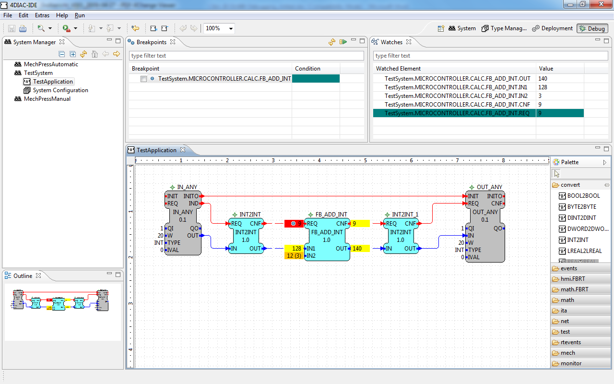

To observe the outputs of your Application you can use 4diac's monitoring functionality. Currently this can be done in two different ways:
A check sign shows that the monitoring is enabled for the system. After that, the engineering environment opens the 4diac debug perspective.
Within this view, it is possible to select the elements which should be monitored. This is done with a right mouse click on the specified element. Either the whole function block by Watch All, or a single interface element of a function block by Watch can be selected.

After that the current values of the selected elements will be displayed in the engineering environment next to the interface elements. They also appear in the Watches view.

Additionally, it is possible to trigger events. Therefore, it is necessary to select Trigger Event menu from the context menu of an event interface element.

The values of function block Input data can be overwritten by the force command form the context menu:

The next time, the function block is executed the forced value will be used with the next event. The old value will be visualized in brackets:

NOTE: Currently NOT supported!!!!!
Breakpoints allows to stop/break the event propagation of the control application. Therefore it is necessary to specify at which event element the execution should be stopped. A breakpoint can be specified by selecting the breakpoint menu form the context menu.

After the next event the execution of the function block will be stopped and the current active breakpoint will be highlighted in the engineering environment.

The Continue menu of the context menu or the Breakpoints view allows to continue the execution the control application.

Additionally it is possible, to specify a condition for a breakpoint. This means that the breakpoint will be only active, if the condition is true. In the current implementation only an event counter is a valid condition. Additionally it needs to be stated that the evaluation of the condition is executed in the engineering environment and automatically resumed if the condition is not true.